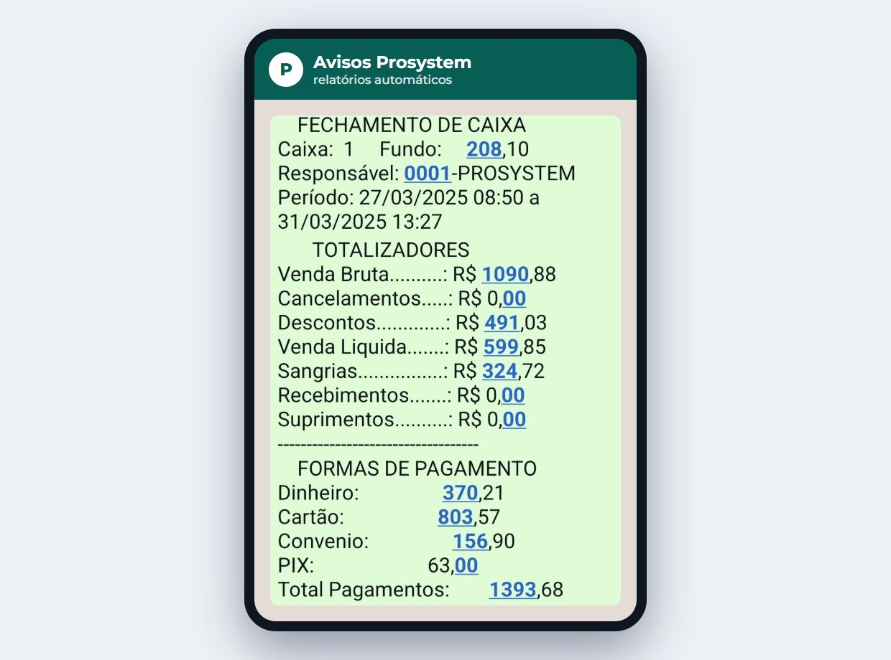
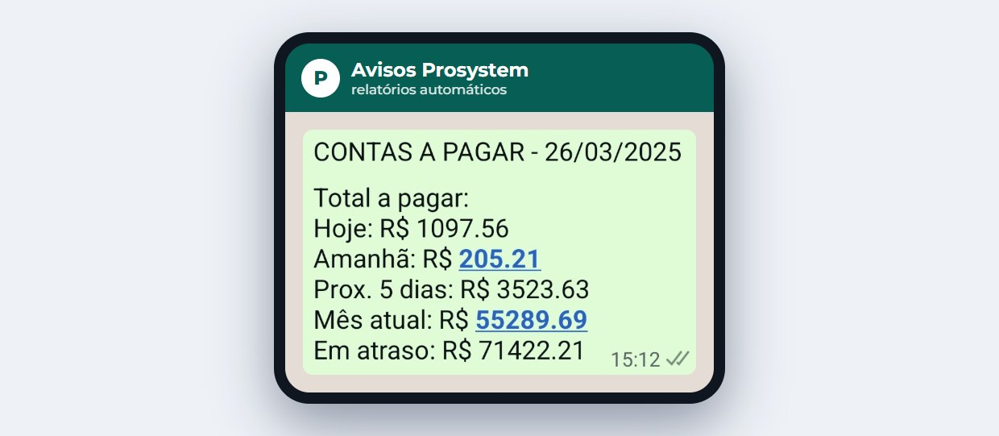
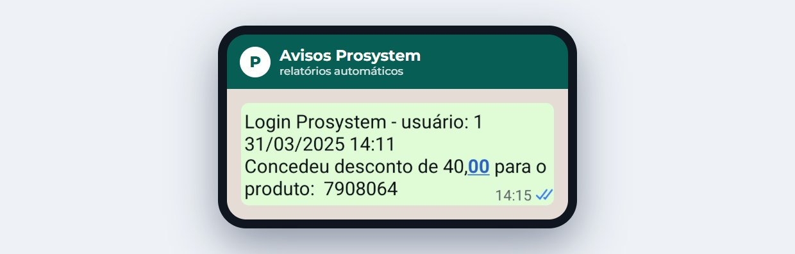
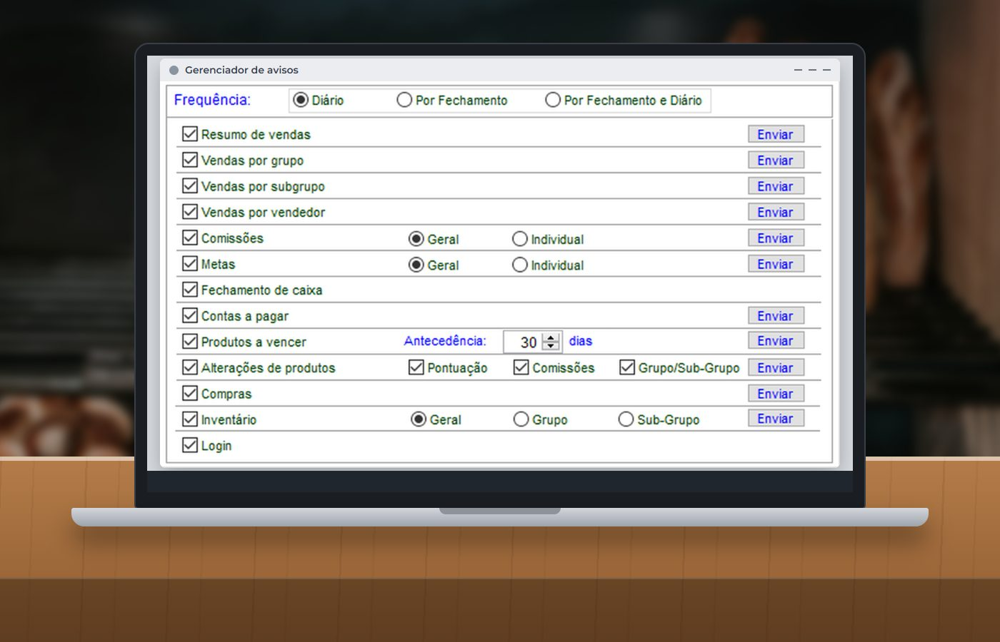

Em 30 segundos
- O Prosystem envia relatórios automáticos por WhatsApp, com frequência diária, no fechamento do caixa ou nos dois.
- O dono pode acompanhar fechamento, vendas, contas a pagar, compras e inventário sem abrir o sistema.
- O aviso de login mostra quando alguém usa a senha para autorizar uma operação, como um desconto.
- Cada pessoa recebe só o que precisa, e a funcionalidade faz parte da versão Plus.
A padaria abre antes do sol nascer e o caixa só fecha à noite. Quando o dono não está na loja, a pergunta é sempre a mesma: como foi o dia? A resposta costuma vir por telefone, numa foto do relatório ou só na manhã seguinte.
Os números já existem no sistema. O que falta é fazer com que cheguem até você sem que alguém precise lembrar de mandar.
O problema de depender da loja
Muitas decisões da padaria dependem de informação do mesmo dia: se as vendas caíram, se o desconto saiu do normal ou se tem conta vencendo amanhã. Quando o dado só está disponível dentro do sistema, ele só é visto quando alguém para e abre o relatório.
O WhatsApp, por outro lado, já faz parte da rotina dos pequenos negócios.
dos pequenos negócios de serviço já usam o WhatsApp para falar com clientes.Fonte: Pesquisa Serviço 2025, Agência Sebrae de Notícias, mais de 1.300 negócios pesquisados. O recorte é de serviços, sem dado específico de padarias.
Levar os números da loja para esse mesmo aplicativo reduz o esforço de acompanhar. O dono não precisa criar um hábito novo: a informação chega onde ele já está.
O que você pode receber no celular
O fechamento de caixa
O resumo traz venda bruta, cancelamentos, descontos, venda líquida, sangrias, formas de pagamento e valor médio de venda. Assim, dá para bater o olho e saber se aconteceu algo fora do normal.

As contas a pagar
O aviso mostra o valor a pagar hoje, amanhã, nos próximos 5 dias e no mês, além do total em atraso. É uma forma simples de organizar o caixa antes da conta vencer.

Os descontos e as autorizações
Sempre que um usuário informa login e senha para entrar no sistema ou autorizar um processo, o registro pode gerar uma mensagem para o responsável configurado. Na prática, um desconto liberado deixa de passar despercebido.

A lista completa inclui ainda resumo de vendas, vendas por grupo, subgrupo e vendedor, comissões, metas, produtos a vencer, alterações de produtos, compras e inventário.
Quer receber os números da sua padaria no celular?
Fale com a ProSystem e veja quais relatórios fazem sentido para a sua loja e como ativá-los na versão Plus.
Quem recebe o quê
Nem todo mundo precisa ver tudo. No gerenciador de avisos, cada contato tem a própria lista de relatórios e a própria frequência.

| Quem | Relatórios sugeridos | Frequência |
|---|---|---|
| Dono | Fechamento, resumo de vendas, contas a pagar, login | Diário e fechamento |
| Gerente | Fechamento, vendas por vendedor, metas | Por fechamento |
| Comprador | Compras, produtos a vencer, inventário | Diário |
| Equipe de vendas | Metas e comissões individuais | Diário |
O que é preciso para funcionar
- Estar na versão Plus. Os avisos por WhatsApp são uma funcionalidade dessa versão.
- Ter o WhatsApp instalado no servidor ou em outra máquina. A recomendação é usar uma conta do WhatsApp Business exclusiva para esses envios, o que também ajuda na confidencialidade.
- Cadastrar os contatos. Informe nome, número e o usuário de cada pessoa em Auxiliares > WhatsApp.
- Programar o envio. O agendador de tarefas do Windows define os intervalos em que as mensagens saem.
Comece com poucos relatórios. Fechamento e contas a pagar já resolvem boa parte das dúvidas do dia a dia. Se a mensagem virar ruído, ela deixa de ser lida.
Perguntas frequentes
O Prosystem envia relatórios pelo WhatsApp?
Sim. Na versão Plus, o sistema envia relatórios automáticos por WhatsApp aos usuários configurados, como fechamento de caixa, vendas, metas, contas a pagar, compras e inventário.
Com que frequência os relatórios são enviados?
É possível configurar envio diário, por fechamento de caixa ou nas duas situações, conforme o agendamento definido.
Dá para saber pelo WhatsApp quando um desconto foi autorizado?
O relatório de login registra quando um usuário informa suas credenciais para entrar no sistema ou autorizar um processo, e o responsável configurado recebe a mensagem correspondente.
Cada pessoa da equipe recebe os mesmos relatórios?
Não necessariamente. Cada contato pode ter sua própria lista de relatórios e sua frequência, e comissões e metas podem ser enviadas de forma geral ou individual.
Fontes
- Avisos via WhatsApp: mais agilidade e automação (Universidade Prosystem)
- WhatsApp é o principal meio de comunicação para 80% dos negócios de serviço (Agência Sebrae de Notícias)
Conteúdo informativo, atualizado em 30 de outubro de 2026. Telas reais do Prosystem, com dados fictícios. Os avisos por WhatsApp são uma funcionalidade da versão Plus.